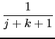

suivant: Matrice de Vandermonde :
monter: Les matrices particulières
précédent: Bloc de Jordan :
Table des matières
Index
Matrice de Hilbert : hilbert
hilbert a comme argument un entier n.
hilbert renvoie la matrice de Hilbert.
C'est une matrice carrée d'ordre n d'éléments :
aj, k = 
On tape :
hilbert(4)
On obtient :
[[1,1/2,1/3,1/4],[1/2,1/3,1/4,1/5],[1/3,1/4,1/5,1/6], [1/4,1/5,1/6,1/7]]
Documentation de giac écrite par Renée De Graeve